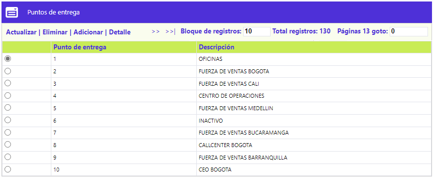
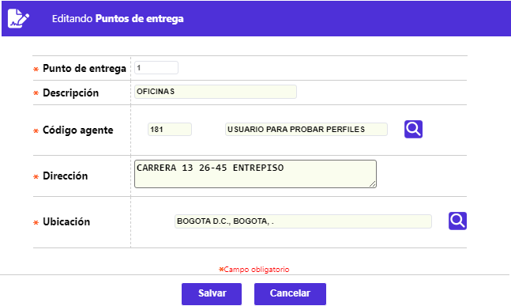
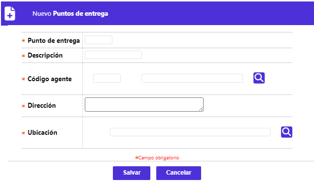
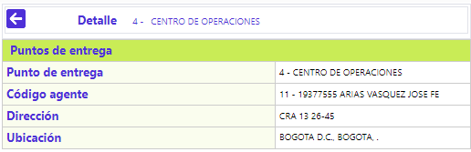

Puntos de entrega
Mediante esta opción, la entidad define aquellos puntos físicos, sucursales u otros lugares, a los que sus clientes pueden dirigirse para recibir el plástico de su tarjeta. El formulario dispone de los enlaces: Actualizar, Eliminar, Adicionar y Detalle.

Actualizar: Al invocar este formulario, se le permite a la entidad modificar los datos de los campos Dirección y/o ubicación. Los otros tres, Punto de entrega, Descripción y Código agente, son de salida o no modificables.

Descripción de campos
|
Dirección |
Campo alfanumérico de hasta 60 caracteres, obligatorio, en que se debe registrar la nomenclatura de la sucursal o lugar en el que el cliente puede reclamar el plástico de su tarjeta. |
|
Ubicación |
Campo obligatorio que cuenta con una lista de valores poblada en Entidades territoriales, de la que debe seleccionarse el municipio en el que se encuentra la sucursal o punto físico. |
Adicionar: Al invocar este formulario, se le permite a la entidad ingresar los datos para cada nuevo punto de entrega de plásticos.

|
Punto de entrega |
Campo numérico de hasta 4 dígitos, obligatorio, en que se debe registrar el número asociado a la nueva sucursal o lugar en el que el cliente puede reclamar el plástico de su tarjeta. |
|
Descripción |
Campo alfanumérico de hasta 10 caracteres, obligatorio, en el que debe indicarse el nombre de la nueva sucursal o lugar en el que el cliente puede reclamar el plástico de su tarjeta. |
|
Código agente |
Campo obligatorio que cuenta con una lista de valores poblada en Funcionarios, de la que debe seleccionarse aquel al que le corresponda atender a los clientes asociados a la sucursal o lugar en el que el cliente puede reclamar el plástico de su tarjeta. |
|
Dirección |
Campo alfanumérico de hasta 60 caracteres, obligatorio, en que se debe registrar la nomenclatura de la sucursal o lugar en el que el cliente puede reclamar el plástico de su tarjeta. |
|
Ubicación |
Campo obligatorio que cuenta con una lista de valores poblada en Entidades territoriales, de la que debe seleccionarse el municipio en el que se encuentra la sucursal o punto físico. |
Detalle: Al invocar este formulario, se le muestran los datos adicionales asociados a cada sucursal o lugar en el que el cliente puede reclamar el plástico de su tarjeta.
